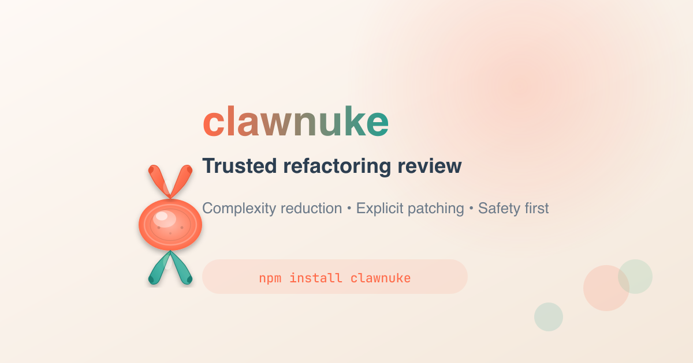

Initialize
Record project settings, provider choices, validation commands, and the local state directory.
codenuke init
Published on npm as codenuke
Automated code review for reliable, trusted refactoring. Codenuke maps repositories into semantic features, asks AI providers to review those slices, and applies fixes only when you explicitly choose a finding.
npm install -g codenuke
Workflow
Codenuke separates discovery, review, reporting, and patching so automation can help without silently changing files.
Record project settings, provider choices, validation commands, and the local state directory.
codenuke init
Turn routes, packages, tests, configs, and workspaces into reviewable feature slices.
codenuke map
Ask providers to inspect focused slices and save structured findings without editing files.
codenuke review --limit 3
Apply one selected finding, run validation, and leave the diff ready for human review.
codenuke fix --finding <id>
Review Surface
Output is designed for triage: severity, category, confidence, affected files, reasoning, validation commands, status history, and the next safe command to run.
Evidence points to a shared mapper path, validation command, and an expected behavior-preserving fix.
next: codenuke show --finding fnd_sig-route-cache
Provider context is small enough to review, with known output schema and failure behavior attached.
validation: pnpm typecheck && pnpm test
Changed files, command output, and status history remain inspectable after the run completes.
next: review git diff
Coverage
Feature records group files by product behavior and validation surface, so providers see useful context without needing the entire repository.
Package bins, workspace packages, Next routes, React Router routes, app tests, and script commands.
Project metadata, packages, FastAPI and Flask routes, pytest discovery, and colocated tests.
Gems, Rails surfaces, Rake and Minitest conventions, plus generated-file avoidance.
Module packages, command entrypoints, cached test discovery, and package-specific validation.
Xcode and Swift target mapping, Gradle modules, Android surfaces, and task graph context.
Stable JSON state, project filters, lock recovery, reports, and provider configuration.
Safety Model
Codenuke is built for teams that want AI review without handing over commits, branches, or unrelated files. It records state locally and makes every fix explicit.
Review commands persist findings only. Patch generation is a separate, finding-scoped command.
Fixes refuse unexpected source changes by default so provider output cannot mix with local work.
Provider responses are parsed through strict schemas before findings or patch attempts are accepted.
Codenuke does not commit, push, open pull requests, or land changes without a future explicit workflow.
Docs
The docs cover installation, provider setup, feature mapping, review runs, reports, and the explicit fix workflow.
Install
Codenuke is published on npm and runs as a Node 22+ CLI. Start with `doctor`, then map and review a small slice before broadening the run.
